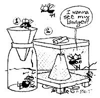

It's fly time again! And all over the country people are swatting, spraying, and hanging out sticky paper to catch the little buzzers. There's a whole range of other methods for bringing about winged wipeout as well. I've heard southern folk say that they have the best luck by pinning a fresh-picked cotton ball on the screen door at neck height . . . north westerners swear that a sprig of cedar used in the same fashion repels the marauders . . . and free spending types all over testify to the effectiveness of expensive electronic zappers.
Well, here are two old-time flytraps that can do the job for little or no cost. I can confirm that both contraptions work exceedingly well. And, as you can see from the following instructions, they're both very easy to construct.
All you need for this is a wide-mouthed jar, some sugar water, and a stiff paper cone. Pour some syrup into the container as bait. Next, fashion a medium-length paper cone, making the wide end larger than the jar's opening and cutting a hole an inch in diameter at the apex (see Complicated Drawing No. 1). Set the cone upside down in the mouth of the container, perhaps taping it in place. Now, put the jar in some unobtrusive spot, and let it be. The flies will be attracted to the syrup and will go down through the cone into the glass trap. Once inside, they won't be able to fly up through the 1" hole to get out again. All you have to do is check, and occasionally clean, the jar.
To make this attrape--mouches, build a simple wooden frame measuring 12" X 12" X 15", with a top and bottom made of plywood (exterior is best). Cut an 8" hole in the center of each piece of plywood, keeping one of the circles to make the lid of the trap. Tack a 10" strip of molding or other scrap wood across the top of this circle to act as a handle and to prevent it from dropping into the box (see Complicated Drawing No. 2).
Now, cover the frame on all four sides with screening (I use staples for this), and make a cone 8" high from a leftover swatch of the mesh (I use staples for this, too). The large end of the cone should measure 8" across and fit snugly into the hole in the bottom of the box, and the small end should have an opening approximately 1-112" in diameter. Since your trap must be up off the ground, glue or nail four 1-1/2" legs to the bottom . . . high enough so that you can fit a bait dish underneath.
Set the cone in its hole with the apex inside the box (and its bottom off the ground) . . . put the lid on . . . and slide a small dish of something irresistible-such as fish scraps, chicken innards, or bits of meat you should have buried days ago-below the funnel. Just be sure the trap is in a spot where the barn animals won't disturb it (and you won't smell it), and you're all set. This device works on the same principle as the jar snare, except that in this case the pesky insects rise from the bait dish through the cone and into the screened box . . . where they stay! Swatting's ineffective, and may provoke profanity; Spraying is expensive, and (cough.) pollutes the air Zappers are too noisy, and use up electricity; (Sticky paper works, it's truer but mostly in your hair) . . . Cotton balls and cedar boughs repel 'em Far too late. You might as well try something new: Old time traps with bait!
|
 |
|
|